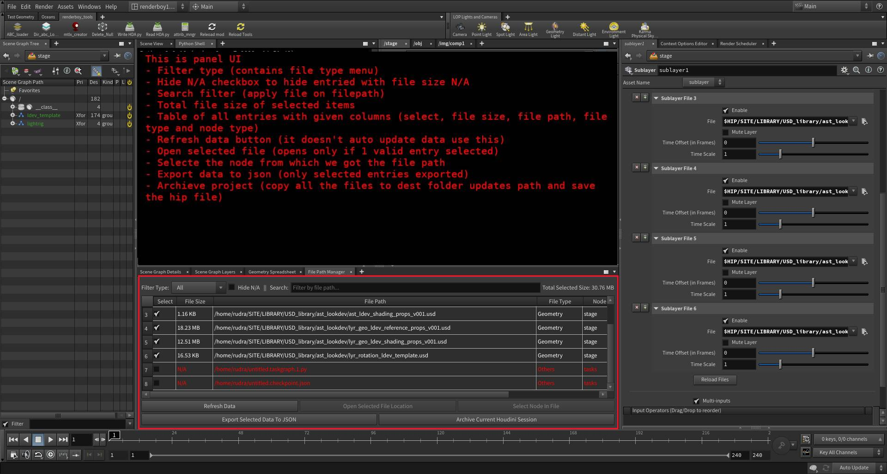

🎯 Houdini FilePath Manager
A powerful and extensible file path auditing and management tool for Houdini artists and technical directors. This tool helps you organize, verify, and archive all external file references in a Houdini project with ease.
✨ Key Features
- 🔠File Path Discovery
- Automatically scans and lists all file paths across the current Houdini session.
- Detects paths in SOPs, LOPs, CHOPs, OBJs, ROPs, and other contexts.
- Identifies whether a file path is a single frame or a sequence using expression analysis (
$F,$F4, etc.). - 📂 Open File Location
- Instantly open the folder containing any file with a single click.
- 🧠Select Node in Houdini
- Automatically select and focus on the node that owns the file path.
- 🗂 Export Selected Paths
- Export selected file path data to a clean
.jsonfile with full metadata. - 📦 Archive Houdini Project
- Copy all selected external files to a new structured folder.
- Organizes by file type (
Geometry,Texture,Volume, etc.). - Automatically relinks file paths in Houdini to the archived location.
- Saves a new
.hipfile with updated paths. - 🔠Advanced Filtering
- Filter by file type (Geometry, Texture, Volume, etc.)
- Search paths using text input
- Show/hide paths with missing files (
N/A) - 💾 Detailed File Metadata
- Shows individual file sizes
- Displays total size of all selected files
- Highlights missing or unreadable files in red
- Includes source context (e.g.,
SOP,ROP,LOP, etc.)
📸 Screenshots / Video links

Video Demonstration
📦 Installation
- Houdini Packages Setup
- Replace DIR_PATH key-value
path/to/source/folderwith current path of this repo in explorer insideHFilePathManager_tool.jsonfile. - Copy the
HFilePathManager_tool.jsonpackage file inside the same houdini'spackages/directory.:- On Windows:
C:/Users/<YourName>/Documents/houdiniXX.X/packages/ - On Linux:
/home/<YourName>/houdiniXX.X/packages/
- On Windows:
- Launch the Tool
- Launch Houdini
- Go to
Windows→Python Panel - Click on
File Path Manager - If all goes well it will show you the panel.
🔠Licensing
This tool is commercially licensed:
| License Type | Access | Duration | Notes |
|---|---|---|---|
| 🔓 Full License | Source Code | Lifetime | One-time purchase |
| 🔠Encrypted License | Encrypted UI | 1 Year | Requires renewal to continue |
Contact for pricing or enterprise licensing:
📧 codesutrahub@gmail.com
🧠Internals (for License Holders)
- PySide2-based UI using Houdini’s Python API
- File references collected using recursive
hou.node("/")traversal - Path rewriting is done with
hou.Parm.set() - Supports encrypted deployment using PyArmor or Cython
- Modular code structure with clean separation of UI and logic
🙋 Contact & Demo Access
Interested in testing the tool or viewing source?
📧 Reach out to: codesutrahub@gmail.com
🧾 License Summary
This repository is a private portfolio preview.
Use, redistribution, and modification are prohibited without a valid commercial license.